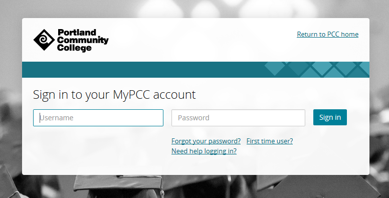
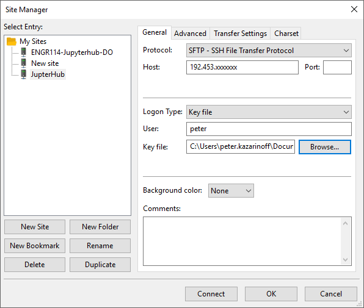
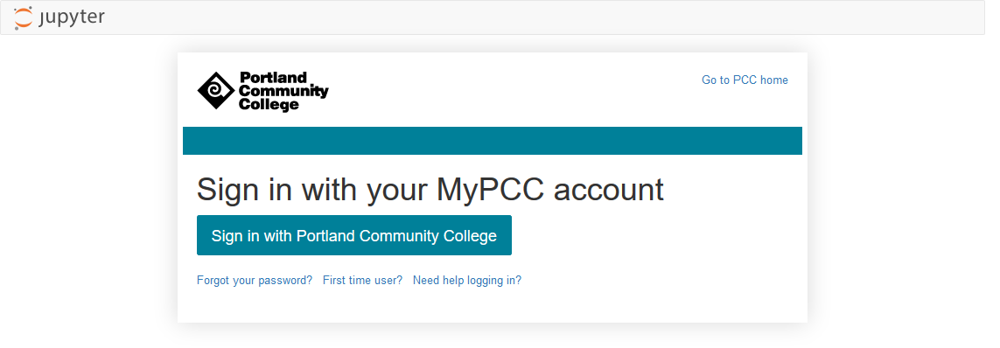

Custom Login Page
Now that we completed the Google OAuth configuration, our JupyterHub login page looks like this:
But our college login page looks like this:

For users to feel comfortable logging into our JupyterHub server, we'll make our JupyterHub login page look more like the college login page.
Create a templates directory and populate it with Jinja templates
Customizing the login page was a time consuming and fussy task. It involved a lot of messing around with css and html, plus some knowledge about how jinja templates work.
First, a set of custom jinja templates need to be created. When JupyterHub runs, there is a directory of jinja templates that build the html users see when they browse to the login page. The jinga templates that build the login page are buried deep in the JupyterHub package code. For my JupyterHub installation on the server, I found the jinja template files in the /opt/miniconda3/envs/jupyterhub/share/jupyterhub/templates/ directory. If you aren't using a virtual environment, the JupyterHub package directory name will likely be different.
The contents of the directory that contains the jinja templates is below.
/opt/anaconda3/envs/pkgs/jupyterhub/share/jupyterhub/templates/
├── 404.html
├── admin.html
├── error.html
├── home.html
├── login.html
├── logout.html
├── page.html
├── spawn.html
├── spawn_pending.html
└── token.html
Next, we will copy these templates into a new /etc/jupyterhub/templates directory. Once copied, we can modify the templates and create a new JupyterHub login page. login.html is the file we'll customize.
$ cd /opt/miniconda3/envs/jupyterhub/share/jupyterhub
$ ls
static templates
$ cp -R templates /etc/jupyterhub/templates/
$ cd /etc/jupyterhub/templates
$ ls
404.html error.html login.html oauth.html spawn.html stop_pending.html
admin.html home.html logout.html page.html spawn_pending.html token.html
Modify login.html
Open up the login.html file with a local code editor and modify login.html with any html you want to show up when a user goes to the JupyterHub site. This is what the user will see first thing, before they have logged in.
I messed around for WAY to long trying to get my custom login page to look like our college login page. An important piece of html that needs to stay in the login.html file is the <a> tag that links to the authentication url. The complete tag is detailed below:
<!–– login.html ––>
<a role="button" class="btn btn-jupyter btn-lg" href="/hub/oauth_login?next=">
Sign in with Portland Community College
</a>
I also kept in the jinga tag at the top of the file that brings in all of the formatting from login.html's parent template page.html.
<!–– login.html ––>
{% extends "page.html" %}
All the changes I made to the login template were inside the "login" block ({% block login %}) of login.html.
{% block login %}
<!–– make changes here ––>
{% endblock login %}
You can find my complete login.html file on GitHub here.
I used FileZilla, an SFTP Windows App, to move the login.html file from my local computer to the server. To use FileZilla, Select [File] → [Site Manager]. Select [SFTP], add the server IP address, username, and select [Log in Type] → [Key File]. FileZilla settings are below:

Modify jupyterhub_config.py
Now we need to modify the jupyterhub_config.py file so that our new set of custom jinja templates are used instead of the default jinja templates.
I initially had a problem, because I set the directory path of the custom templates as templates. This caused the login page to not work as expected. When I changed the directory path to templates/ the problem was resolved.
# /etc/jupyterhub/jupyterhub_config.py
...
# sets a custom html template at the login screen.
c.JupyterHub.template_paths = ['/etc/jupyterhub/templates/']
...
Restart JupyterHub and view changes
With changes to the login.html file complete, and the template_paths= set in jupyterhub_config.py correctly, we can restart JupyterHub and view the changes rendered on the login page.
$ sudo systemctl stop jupyterhub
$ sudo systemctl start jupyterhub
$ sudo systemctl status jupyterhub
# [Ctrl]-[c] to exit
The new login page is below:

The login works, but the issue now is that without css, the page looks plain and doesn't really look like our college login page:
Therefore, we need to add some css styling to the page.
Style the login page with css
Finally, the style.min.css file needs to be modified so that the login page styling looks a little more like our college login page.
CSS another thing I messed around with for a long time, a WAY to long time... I couldn't figure out a way to get JupyterHub to use a custom .css file.
I tried creating a .css file in the new custom templates directory, but JupyterHub wouldn't copy it as a static asset when the server launched. I also tried putting a separate .css file deep inside of the JupyterHub package code. When the server ran, it seemed to copy the custom .css file (I could see the custom .css file using chrome's inspect element tool). But for some reason the custom .css file would be blank when server serve was running, even though the custom .css file contained a whole bunch of css code when viewed deep in the JupyterHub package code.
The solution I finally got to work was to modify the style.min.css file itself that JupyterHub uses. This file is buried deep in the JupyterHub package code:
/opt/miniconda3/envs/jupyterhub/share/jupyterhub/static/css
├── style.min.css
└── style.min.css.map
Modify the style.min.css file to include all the custom css styling desired (find my complete css file on GitHub here
I used FileZilla again to move over the file. style.min.css is a pretty big file and copying and pasting into PuTTY would probably lead to a lot of errors.
Restart JupyterHub
With changes to the login.html file and style.min.css file complete, we can restart JupyterHub and view the changes rendered on the login page.
$ sudo systemctl stop jupyterhub
$ sudo systemctl start jupyterhub
$ sudo systemctl status jupyterhub
# [Ctrl]-[c] to exit
Below is the look of the modified login page in all it's custom html and css glory:

Summary
In this section, we created a custom login page that looks a lot like our college login page.
First we copied over the jinja templates JupyterHub uses to build the login page into a separate directory. Then we modified the html code in the login.html template. Next, we modified the JupyterHub configuration to use our custom template. Finally, we modified a special css file buried deep in the JuypyterHub package code. The end result is a JupyterHub login page that looks a lot like our college login page.
Next Steps
The next step is to add a set of notes and assignments to GitHub. We'll use these notes and assignments for the class. After we save the notes and assignments to GitHub, we will use a JupyterHub extension to pull the assignments and notes down for each student (each JupyterHub user).